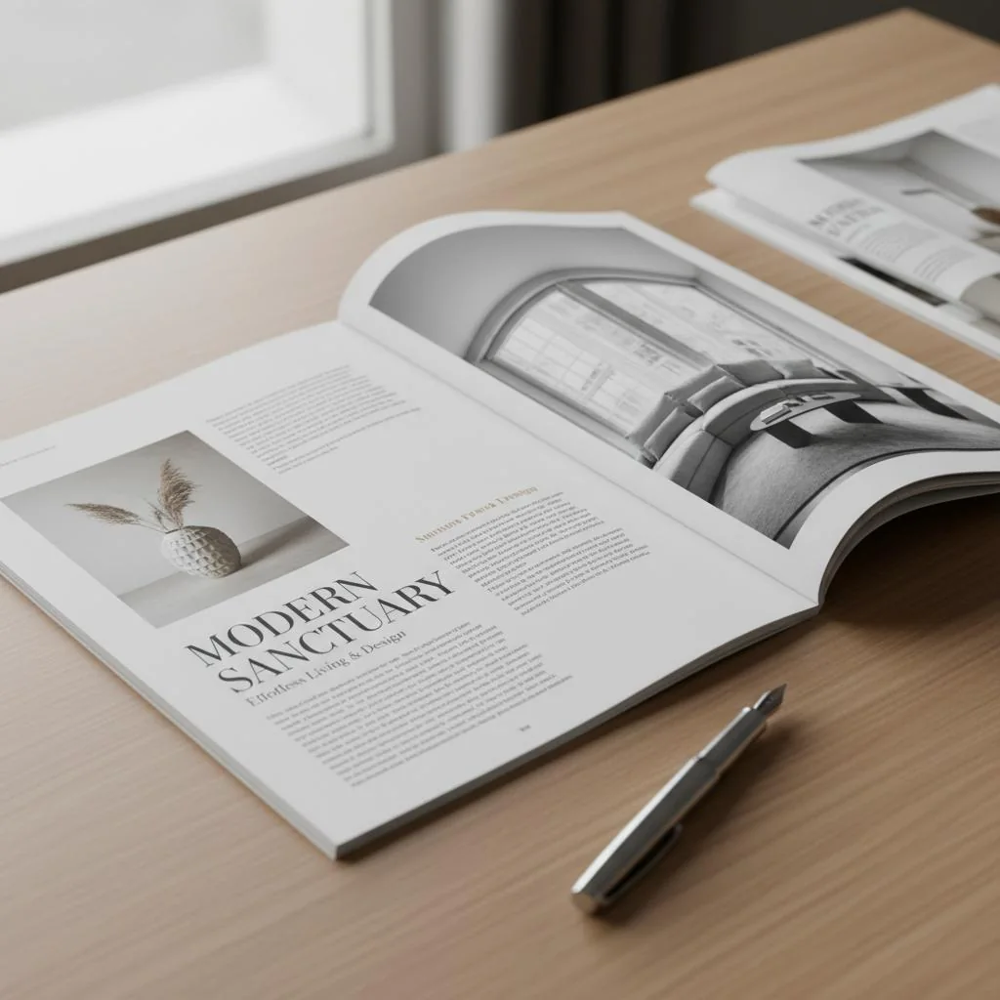

THE JOURNAL EST. 2026
Stories worth
your time.
Thoughtful stories, fresh ideas, and new perspectives. Discover something worth reading every day.
Explore stories
EDITOR’S PICK
In focus.
Our most-read story, straight from DummyJSON.
EDITOR’S PICK · LOADING
Loading featured story…
Fetching the most-read article.
All Stories
Explore our latest stories and perspectives.
Changes are stored only in this browser (demo mode).
Loading stories…
Unable to load stories. Please try again.
No stories available
There are no articles available at the moment.
ABOUT THE JOURNAL
Made for the curious.
The Journal is an independent digital magazine for stories and perspectives. All article titles, body text, and tags come directly from the DummyJSON REST API — no fabricated articles.
DummyJSON simulates write operations. After successful API requests, this demo stores changes in your browser; the original server posts remain unchanged.